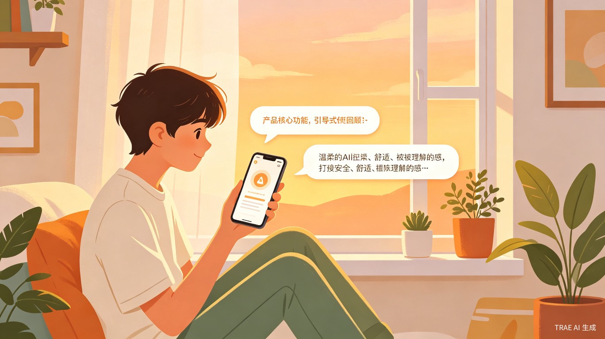
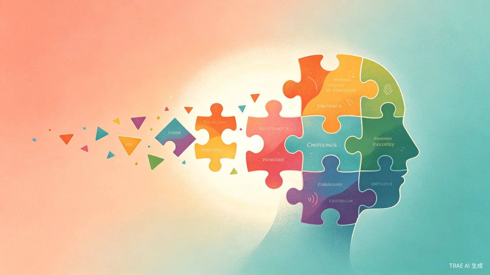
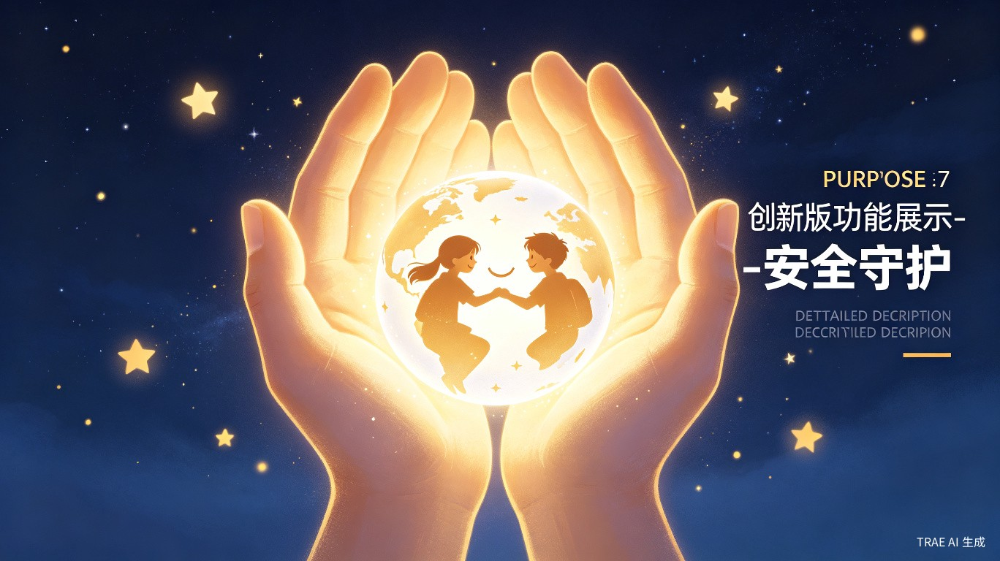
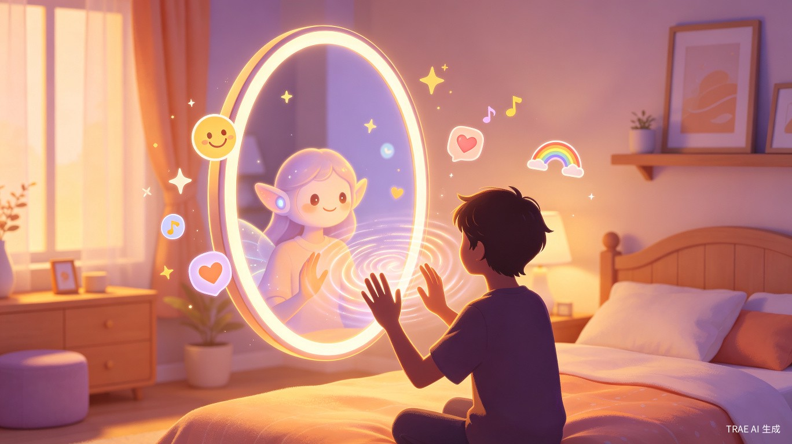
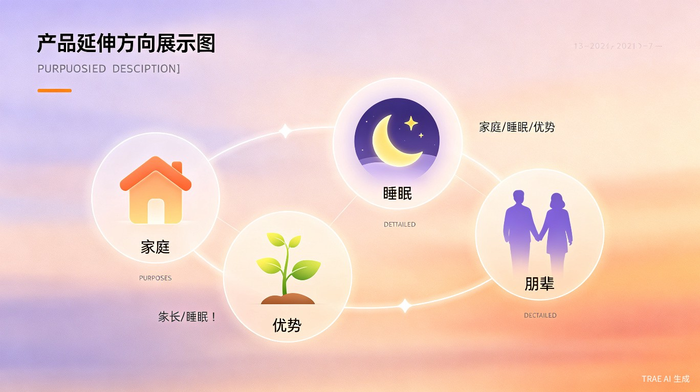
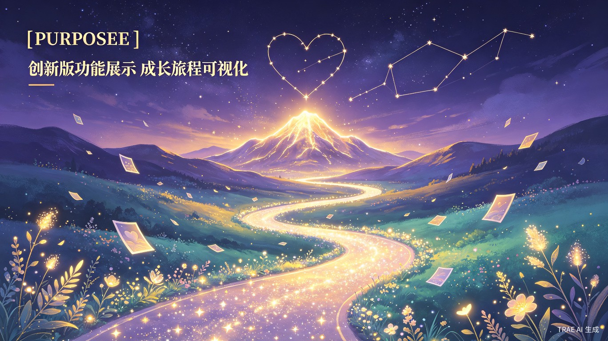

构建完整陪伴生态
从家庭叙事映射到睡眠陪伴，从优势发现到朋辈互助，心镜打造全方位的青少年成长支持网络。
AI个性化成长叙事伙伴
将AI塑造成一面正向、有温度的智能心镜
陪伴青少年在数字时代完成自我探索与身份构建
每一个青少年都值得被真正看见、被理解、被陪伴
将AI塑造成一面正向、有温度的智能心镜
将AI塑造成一面正向、有温度的智能「心镜」，把传统被动的情绪记录升级为AI驱动的建构式自我对话与叙事重塑过程
精准锚定「自助心理工具」与「专业医疗干预」的中间空白赛道，以「成长同行者」的轻量化友好形象面向用户
大幅降低青少年主动寻求心理支持的门槛，填补当前市场的供给缺口，陪伴青少年完成自我探索与身份构建
青少年成长中面临的四大困境
从记录到建构，AI驱动的成长陪伴

告别生硬的「今天过得怎么样」，心镜用更有意思的问题，帮你发现日常里被忽略的小确幸和小情绪。
心镜会把你的日常记录，编织成只属于你自己的成长故事。你会发现，原来自己已经走了这么远。
「我注意到过去一周你面对压力时尝试了三种不同的应对方式，其中『先出门运动10分钟』效果最好，你的应对工具箱里又多了一件利器！」
把你的成长路径比作攀登一座自己定义的山峰，每一次克服困难都是征服一个专属营地
「这次演讲确实让你紧张，但你哪怕声音发颤也坚持讲完了，这份责任感已经非常亮眼了」

不用强迫自己用文字表达。对着心镜说说话、画个表情、随手涂鸦，它都能读懂你。
像跟朋友聊天一样，想说就说
选一个表情，心镜就知道你今天的心情
画出来，心镜帮你解读画里的情绪
看见不同场景下的自己，接纳多元自我

心镜是你的朋友，也懂得什么时候该提醒你寻求更多帮助。它始终守护边界，绝不越界。
呼吸引导、正念练习等低门槛功能，随时获得即时支持
检测到极端负面表述时，温和建议休息并推送权威心理援助渠道
绝不输出医疗诊断类内容，明确标注「本产品为心理陪伴工具，不具备医疗诊断属性」

心镜的核心交互形态是一面智能「魔镜」。它不只是镜子，而是一位始终陪伴在身边的朋友——开心时陪你笑，难过时给你拥抱。
有困扰、不开心时，向心镜诉说；高兴、开心时，第一时间和它分享
敏锐捕捉情绪微妙变化，在你开口前就温柔问候
用幽默方式帮你换个角度看世界，让低落悄悄消散
记住你分享的每个快乐瞬间，在需要时翻出来温暖你
从个人成长到家庭生态，构建完整陪伴体系
家庭叙事映射
家长与孩子分别倾诉同一件家庭事件的感受，系统独立生成双方专属内心叙事地图，以匿名化形式对照呈现，消解亲子信息差。
睡眠陪伴系统
睡前语音倾诉当日烦心事，AI将焦虑转化为节奏舒缓的专属睡前故事，次日生成「昨夜心绪简报」。
优势发现系统
AI主动挖掘被忽略的「高光优势瞬间」，种进专属虚拟花园，随着记录积累，种子发芽抽枝开花。
朋辈互助系统
基于情绪模式匹配匿名同伴，在合适节点推送同频共鸣提示，让用户感受「有人并肩努力」的陪伴感。

从家庭叙事映射到睡眠陪伴，从优势发现到朋辈互助，心镜打造全方位的青少年成长支持网络。
核心优势、潜在挑战与未来空间
心镜不仅是一款产品
更是一个关于青少年成长的美好愿景
切入自助心理与专业医疗之间的空白赛道
陪伴青少年完成自我探索与身份构建
从C端延伸至校园体系与全年龄段生态

陪伴每一位青少年
在数字时代找到属于自己的光